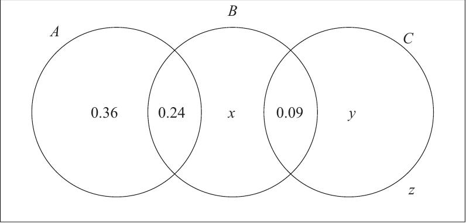

Pearson Edexcel IAL Statistics S1 · WST01/01 · October 2025 · Q6 · completed with prompting
WST01 October 2025 Q6 — chain Venn probability
Question
The Venn diagram, where $x$, $y$ and $z$ are probabilities, represents the events $A$, $B$ and $C$ and their associated probabilities.

Official source crop — WST01 Q6 probability diagram
Given that the events $A$ and $B$ are independent,
(a) find the value of $x$ (3)
Given also that $P(B\mid C')=31/75$
(b) find the value of $z$ (2)
(c) Hence find the value of $y$ (2)
(d) Find
(i) $P((B\cup C)'\cap A)$ (ii) $P((A\cup B)\cap C')$ (2)
Status: worked through (a)–(d) with prompting; part (b) includes a tutor teaching moment, not a student error.
[9 marks: (a)3, (b)2, (c)2, (d)2]
Part (a)[3 marks] · 2 steps
STEP 1/2Frame the source-specific relation
The strategy is to find whole-event probabilities from the chain regions, apply independence, and solve for the B-only region. Divide by $P(A)$ before expanding to reduce arithmetic.
Independence gives an equation between the known intersection and the two whole circles. The diagram makes $P(A)$ known and expresses $P(B)$ in terms of $x$.
Use $P(A\cap B)=P(A)P(B)$, with $P(A)=0.36+0.24$ and $P(B)=0.24+x+0.09$.
The difficult transition is using whole-circle probabilities rather than isolated labels. Independence relates $P(A)$ and $P(B)$, not A-only and B-only.
The lesson evidence records the independence idea and an efficiency prompt to divide first. A neutral common trap is multiplying exclusive-only regions instead of complete event totals. It does not support attaching an incorrect method to the student.
The B regions now sum to $0.24+0.07+0.09=0.40$, and $0.60\times0.40=0.24$, checking the defining equation exactly.
Read the printed chain from left to right: event A contains 0.36 and 0.24, while event B contains 0.24, $x$ and 0.09. Consequently independence becomes $0.24=(0.60)(0.33+x)$. This region inventory is the bridge between the diagram and the formula. It prevents the common but structurally wrong equation that multiplies the two exclusive-only labels 0.36 and $x$.
The printed overlap 0.24 is already part of both event totals, so it must appear once inside each factor rather than being added again after multiplication. Solving from the whole-event equation keeps that shared region correctly represented and preserves the diagram's chain structure.
The independence route stops at x=0.07 and reconstructs P(B)=0.40. Transfer by totalling named events from all their regions before multiplying whole-event probabilities and checking the printed intersection.
STEP 2/2Independently execute and validate
Thus $P(A)=0.60$ and $P(B)=0.33+x$. Substitute: $0.24=0.60(0.33+x)$. Dividing by 0.60 gives $0.40=0.33+x$, hence $\boxed{x=0.07}$ and $P(B)=0.40$.
Read complete event totals from the chain: P(A)=0.36+0.24 and P(B)=0.24+x+0.09. The difficult transition is using the printed overlap once as P(A∩B), not multiplying the exclusive-only labels. Independence therefore gives 0.24=(0.60)(0.33+x), which solves to x=0.07. This part has no evidenced learner error, so region-confusion is a neutral check only. Rebuild P(B)=0.40 and verify 0.60×0.40=0.24 exactly; all region masses remain non-negative. Stop at x=0.07. Transfer by totalling complete named events before applying P(A∩B)=P(A)P(B), especially when individual Venn regions are not themselves event totals.
After solving, rebuild every quantity used: $x=0.07$ makes $P(B)=0.40$, and $P(A)P(B)=0.60\times0.40=0.24$, exactly the printed overlap. The value also leaves all six eventual regions non-negative. In a new independence Venn problem, always total complete named events before multiplying; region labels can serve directly only when the region itself is the named intersection in the independence identity.
When you see a Venn question state independence, total each named event, write the product identity, and verify the solved regions reconstruct both whole circles.
Part (b)[2 marks] · 2 steps
Carry-in: From part (a): $x=0.07$, so $P(B\cap C')=0.24+0.07=0.31$.
STEP 1/2Frame the source-specific relation
Write conditional probability as intersection over conditioning event, shade mentally everything outside $C$, and include the outside region $z$ in the denominator before solving.
$C'$ contains every region not inside circle C, including the area outside all circles. The numerator keeps only the parts also in B.
Use $P(B\mid C')=P(B\cap C')/P(C')$. Here $P(B\cap C')=0.24+0.07$ and $P(C')=0.36+0.24+0.07+z$.
The difficult transition is the conditioning denominator. Exclude the $B\cap C$ and C-only regions, but include outside $z$ because outside the circles is still outside C.
The lesson evidence shows the tutor first treated $31/75$ as something to derive and omitted $z$; the student pointed out it was given. This is explicitly a tutor teaching moment, not a learner mistake.
Substitution gives $0.31/(0.67+0.08)=0.31/0.75=31/75$. The denominator exceeds the numerator and the probability lies below one.
Enumerate $C'$ explicitly as A-only 0.36, $A\cap B$ 0.24, B-only 0.07 and outside $z$. The fixed part of its probability is therefore 0.67, while the intersection with B is only 0.24+0.07=0.31. This distinction explains both numerator and denominator before the fraction $0.31/(0.67+z)$ is equated to the given $31/75$.
The conditional setup stops at z=0.08 after identifying numerator 0.31 and denominator 0.67+z. Transfer by enumerating the conditioning region, including outside space, before selecting its intersection with the named event.
STEP 2/2Independently execute and validate
Therefore $$\frac{0.31}{0.67+z}=\frac{31}{75}.$$ Since $0.31=31/100$, cancellation or cross-multiplication gives $0.67+z=0.75$, so $\boxed{z=0.08}$.
Enumerate C′ before forming the conditional fraction: its mass is 0.36+0.24+0.07+z=0.67+z, while B∩C′ is 0.24+0.07=0.31. The difficult transition is keeping numerator and denominator event boundaries distinct. Evidence labels this a tutor teaching moment, not a student error, so the card must not invent a failed learner attempt. Solve 0.31/(0.67+z)=31/75 to obtain denominator 0.75 and z=0.08. Check by substituting back: 0.31/0.75=31/75. Stop at z=0.08. Transfer by shading or listing the conditioning event first, then selecting only its overlap with the requested numerator event.
Cross-multiplication can be checked without decimal ambiguity: $0.31=31/100$, so $(31/100)/(0.67+z)=31/75$ allows the nonzero factor 31 to cancel, giving $1/[100(0.67+z)]=1/75$ and hence $0.67+z=0.75$. Thus $z=0.08$. The resulting conditioning event has mass 0.75, matching the completed complement of C in the following part.
When conditioning on a complement in a Venn diagram, enumerate every region in the complement, including outside space, then intersect for the numerator.
Part (c)[2 marks] · 2 steps
Carry-in: Solved regions: $x=0.07$ and $z=0.08$; fixed regions 0.36, 0.24 and 0.09.
STEP 1/2Frame the source-specific relation
Use total probability one and subtract every known disjoint region, showing the complete subtraction line required for method credit.
The rectangle partitions into six disjoint labelled regions. Once $x$ and $z$ are known, C-only $y$ is the only missing mass.
Use $0.36+0.24+x+0.09+y+z=1$, then isolate $y$.
The difficult transition is avoiding omission or double-counting. The chain has no $A\cap C$ or triple region, so no additional central term exists.
Lesson evidence records the value and a prompt to show the subtraction line. The issue was presentation for method credit, not an invented conceptual failure.
All regions sum to $0.36+0.24+0.07+0.09+0.16+0.08=1.00$, and every probability is non-negative. A second check is to rebuild $P(C)=0.09+0.16=0.25$ and its complement $0.75$, which agrees with the denominator obtained in part (b). This cross-part agreement confirms that the carry-in values and the newly found region belong to a single coherent partition.
Write the rectangle as a disjoint ledger before subtraction: 0.36, 0.24, 0.07, 0.09, $y$ and 0.08. The known entries total 0.84, so only the C-only region can supply the missing 0.16. The diagram has no A–C overlap and no triple-overlap compartment; adding either would change the source geometry rather than complete it.
A region ledger tied to the printed chain gives the known subtotal in one direction: A-side regions total 0.60, the solved B-only and B–C regions add 0.16, and outside contributes 0.08, leaving 0.16 for C-only. This regrouping reaches the same missing mass without changing the formal sum-to-one derivation and reveals immediately if any region has been counted twice.
The completed-part endpoint is y=0.16. Transfer by writing every disjoint region once, subtracting the known subtotal, then cross-checking a reconstructed event complement against a previous conditional denominator.
STEP 2/2Independently execute and validate
Substitute carried values: $$y=1-0.36-0.24-0.07-0.09-0.08=1-0.84=\boxed{0.16}.$$ Every term corresponds to one and only one region.
List the six disjoint rectangle regions exactly once: 0.36, 0.24, 0.07, 0.09, y and 0.08. The known subtotal 0.84 leaves y=0.16. The difficult transition is respecting the printed chain geometry—there is no A∩C or triple-overlap region to add. No learner mistake is evidenced in this part, so any double-counting diagnosis is only a neutral warning. Check independently that P(C)=0.09+0.16=0.25, hence P(C′)=0.75, matching the conditioning denominator from part (b). Stop at y=0.16. Transfer by building a disjoint-region ledger and cross-checking one reconstructed event total against an earlier conditional denominator.
The reconstructed event totals provide a second route to the same check. Event C has $0.09+0.16=0.25$, so $C'$ has 0.75, exactly the denominator inferred from $0.67+z$ in part (b). That cross-part equality is stronger than merely observing that all regions sum to one. For transfer, use both the partition total and one previously conditioned complement whenever a Venn question solves regions sequentially.
When one Venn region remains, list all disjoint regions in a single sum-to-one equation, substitute carry-ins, and check the completed total.
Translate each set expression by complements, unions and intersections, then identify and add exactly the qualifying labelled regions.
A complement removes every point in the named union; an intersection keeps only points satisfying both conditions. In the chain geometry, A and C are disjoint.
Use $(B\cup C)'\cap A$ for A outside B and C, and $(A\cup B)\cap C'$ for points in A or B but not C.
The difficult transition is operation order. Form the union, take its complement if shown, then intersect; reading symbols as ordinary language without shading can include 0.09 incorrectly.
The lesson evidence records live union-versus-intersection highlighting confusion and prompting. The diagnosis is limited to reading the event notation in this item.
Both selected regions are subsets of $C'$, whose total is 0.75. Keep the roles distinct: $P(A\cup B)=0.36+0.24+0.07+0.09=0.76$, whereas removing the $B\cap C$ region gives $P((A\cup B)\cap C')=0.76-0.09=0.67$. Thus 0.67 is the requested intersection with $C'$, not the unqualified union.
For (i), being in A while outside both B and C leaves only the A-only compartment 0.36. For (ii), first take A or B, then remove C: A-only 0.36, the A–B overlap 0.24 and B-only 0.07 survive; the B–C overlap 0.09 does not. Listing survivors before addition turns dense notation into a source-verifiable region selection.
A verbal membership test can accompany shading: a point counted in (ii) must answer yes to ‘in A or B?’ and yes to ‘outside C?’. The 0.09 compartment fails only the second question; the three regions totalling 0.67 pass both. This test distinguishes intersection from union more reliably than treating the symbols as a flat list of operations.
The ordered stopping answers are 0.36 and 0.67, while the broader union remains 0.76. Transfer by converting each operator into a membership filter and explicitly naming any region removed by a final intersection.
STEP 2/2Independently execute and validate
For (i), only A-only qualifies, so $P((B\cup C)'\cap A)=\boxed{0.36}$. For (ii), include A-only, $A\cap B$, and B-only, but exclude $B\cap C$: $0.36+0.24+0.07=\boxed{0.67}$.
For (i), outside B∪C but inside A selects A-only, giving 0.36. For (ii), first list A∪B as four regions totalling 0.76, then intersect with C′ to remove the 0.09 B∩C region, leaving 0.67. The difficult transition is not conflating the broader union with its C′-restricted subset. No learner error is evidenced, so the diagnosis remains mathematical and not personal. Check by disjoint addition: 0.36+0.24+0.07=0.67 and 0.67+0.09=0.76. Stop with 0.36 and 0.67 in the printed (i)/(ii) order. Transfer by translating each set operator into a membership filter before adding labelled regions.
The numerical roles must remain separate. The unqualified union includes four regions and equals $P(A\cup B)=0.36+0.24+0.07+0.09=0.76$. Intersecting that union with $C'$ removes exactly 0.09, producing 0.67. Therefore 0.67 is not another name for the union. A reliable transfer check is to compute the broader event first and show explicitly which disjoint region the final intersection excludes.
When set notation is dense, shade one operation at a time and translate the final region back into labels before adding probabilities.